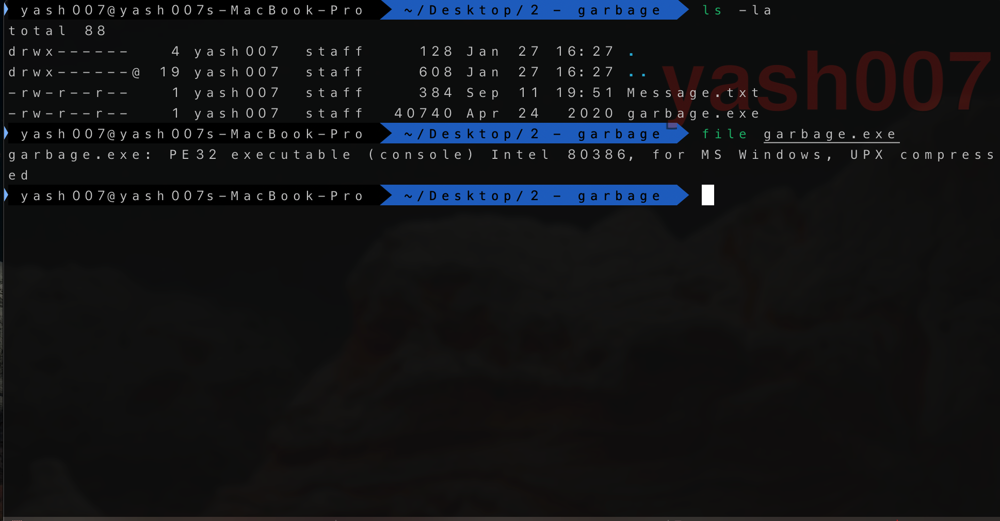
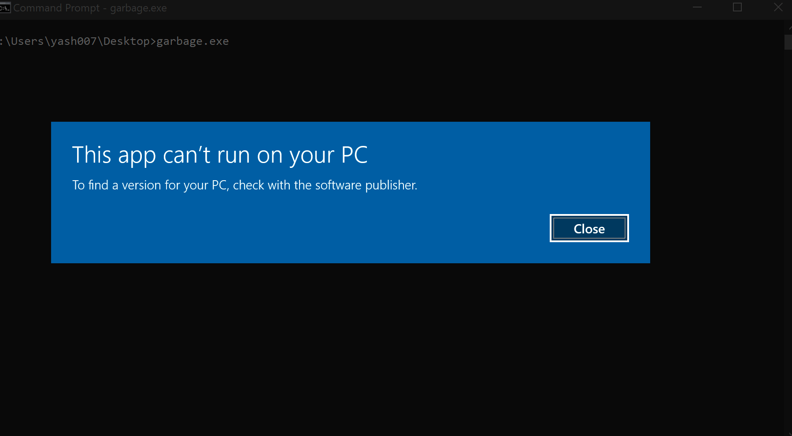
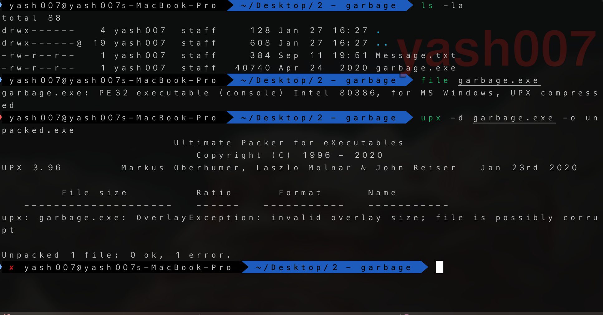
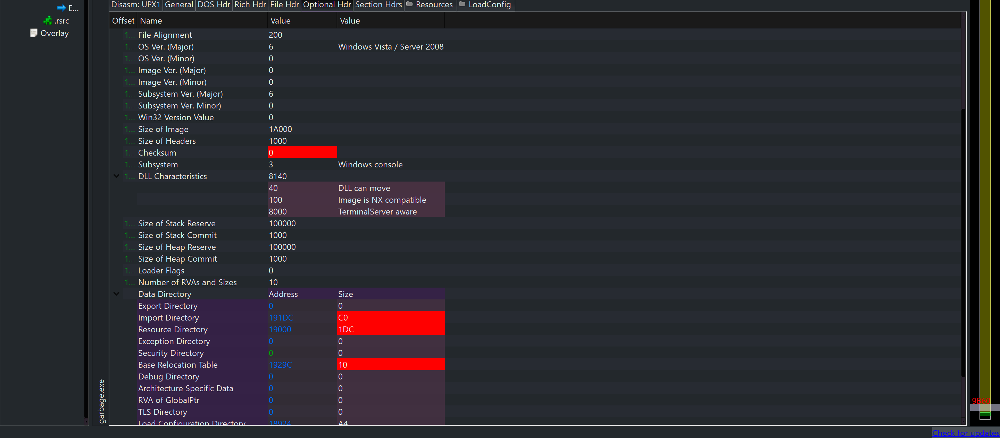
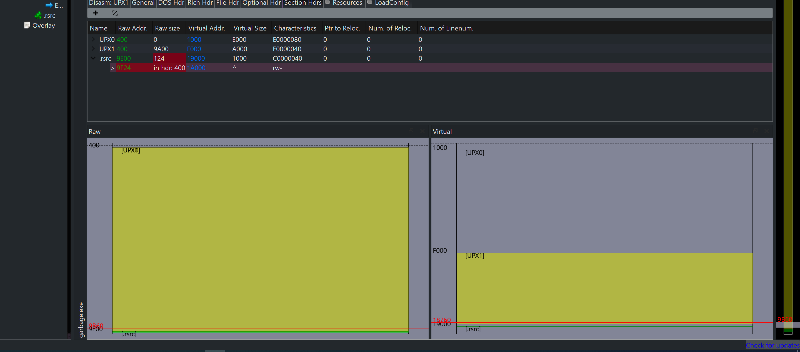
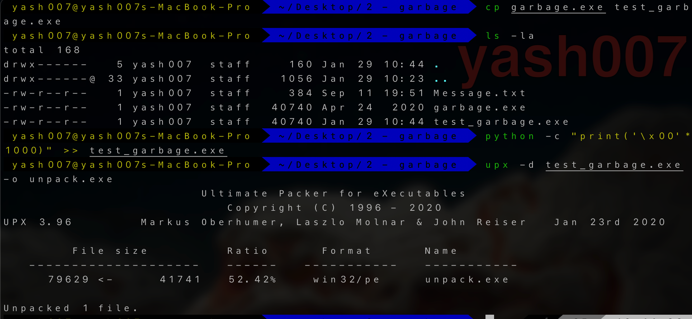
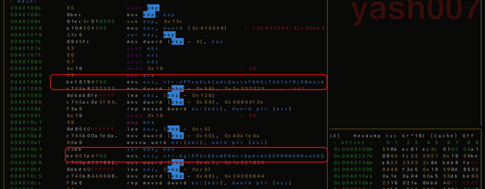
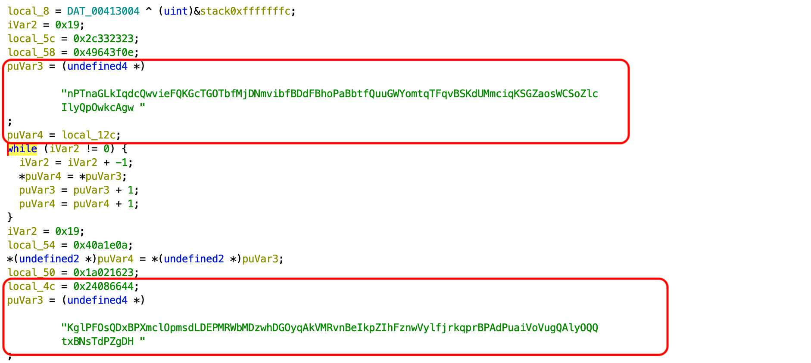
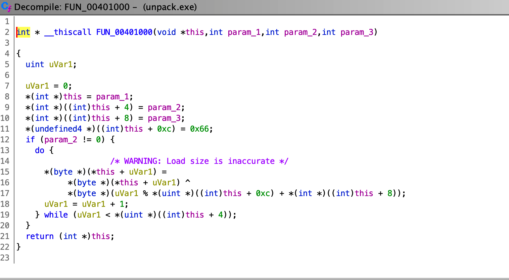
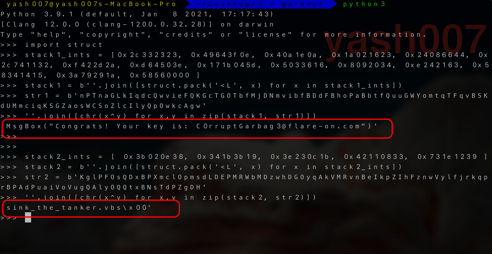

One of our team members developed a Flare-On challenge but accidentally deleted it. We recovered it using extreme digital forensic techniques but it seems to be corrupted. We would fix it but we are too busy solving today's most important information security threats affecting our global economy. You should be able to get it working again, reverse engineer it, and acquire the flag.
Background
This challenge is all about understanding the Windows PE File, and how to repair it with missing bytes.
Goal is to modify the binary so that PE can be executed, and we can do some static analysi over it.
Challenge Overview
The second challenge , we get PE Executable File, which got corrupted during the reocvery by fire eye employee, which we have to fix .
We can see the file is UPX compressed, x86 Executable.

During the exeution , it gets blocked by Windows Smartscreen.

So , we will try to decompress the UPX

We recieve an error during UPX decompression.
Error Analysis
For Analysing the PE File, I will be using PE bear x64 file, In "Optional Header" we can see Import Directory and Base Address relocation are HIGHLIGHTED as RED, which indicates it may have some size issues.

If we Look at the section headers for detaild we, the raw size is 124 which supposed to 400 in hexadecimal. So missing of Bytes of in PE file, which we will try to fill in next Section.

Bytes Modification
In previous section we learnt, Overlay size is greater than the PE file size. The overlay size is calculated by reading PE Headers of file.
Thus, we will try to fix this by increasing the size of PE file by feeding Null bytes or NOP Instruction using python.

Now we have UnPacked PE file Successfully.
Code Analysis
During our static analysis, we found some Strings

References to the strings, which has two static strings
- local_12c
- local_4c
Following holds the funtion throughout the function is called.
- local_1c
- local_5c
These are copied to the stack.

Looking at Function FUN_00401000 , is a simple XOR.

Solution
Using Python Rpel, we can retrieve The flag.

FLAG : 'MsgBox("Congrats! Your key is: C0rruptGarbag3@flare-on.com")'
With Above result , we analysed code is writing the file to
sink_the_tanker.vbs.